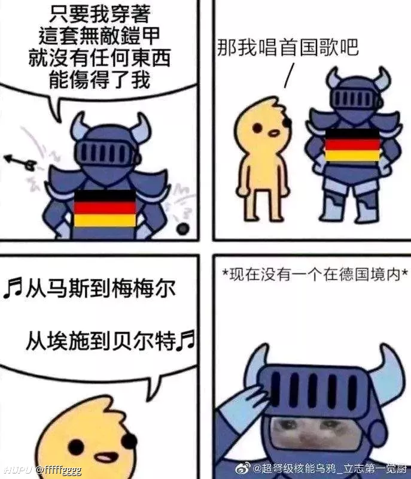

插曲
Bon Jovi «Nobody's Hero»When you're afraid
And it feels like you're too tired to fight
Even your heart don't know if you're still alive
Man, you never felt so all alone
In this world tonight
And I, don't you know that I felt the same?
I've seen this storm, I've been through the rain
You've gotta know that I feel your pain
Don't be afraid
When you're on the edge
I will rescue you
When you need a friend
I'll be there for you
I'm nobody's hero
For you I'd lay down my life
Nobody's hero
But I'd tear down the stars from the sky
If you would lean on me
Baby, dream on me
You can bleed on me
Just believe in me
Nobody's hero
Well, out on these streets
They're waiting for blind eyes to see
They're waiting for our cuts to bleed
Out here they're waiting for you and me
Well, alright, alright
'Cause this time you know I ain't afraid to fight
For you I ain't afraid to die
As long as you are by my side it will be alright
When all faith is gone
I will pray for you
Just keep holding on
I'll be there for you
I'm nobody's hero
But for you I'd lay down my life
Nobody's hero
But I'd tear down the stars from the sky
If you lean on me
You can bleed on me
Baby, dream on me
Just believe in me
Nobody's hero
I'm nobody's hero
But for you I'd lay down my life
Nobody's here
But I'd tear down the stars from the sky
If you lean on me
You can bleed on me
Baby, dream on me
Just believe in me
I'm nobody's hero
Nobody's hero
Baby, lean on me
You can dream on me
Just bleed on me
Just believe in me
摘抄


素材
南直隶「远东第一体育论坛」
江苏海岸线那么长为啥没有几个大的港口城市？全是淤泥滩涂地啊。。。
黄河改道早了，再晚个几年又出来一个省🐶
现在看起来是很差
古时候却是上好的盐场
扬州就是靠着盐务和运河成为天下最繁华的城市
你在地图上看到浙江沿海的黄 只是水浑而已，但是水深适合建港口。江苏沿海的黄 是因为当初黄河从淮河口入海，在海边积淤了大量烂泥。很多地方落潮的时候甚至露出水面。水这么浅，怎么建港口？历史上黄河泛滥，把江苏的海岸线往东推移了一百多公里。江苏1/3的土地，在汉朝的时候还是一片汪洋大海，也算因祸得福了。
盐城市海拔最高是废黄河堤，海拔7米
有个词，叫黄河夺淮。另外，江苏泰州有个地方叫三水，由来是，有一年发大水，长江，淮河，黄河，三条水汇聚，刺激
汉朝时扬州就是海边了，唐以前也没有崇明。江苏肯定能扩大，就是时间有点久🐶
历史上的今天，战争狂人希特勒在柏林自杀黄河给江苏增加了近三分之一的面积，也是因为黄河，本是海边的盐城现在市中心距离东海特别远
小胡子如果在慕尼黑协定之后意外去世，那绝对是德国历史上的伟人，用外交手段吞并奥地利和波希米亚地区，那是连俾斯麦都没做到的伟业…………
汪精卫：对啊，我特么怎么不早点死？
汪精卫如果当初死在狱中，或者没被释放最终被砍头，评价该和谭嗣同一样。引刀成一快，不负少年头 也将和 我自横刀向天笑，去留肝胆两昆仑 一样，成为传颂的名句。可惜没有如果
希特勒这个人其实一定程度上为德国人背锅，有一部片子假如希特勒到了现代的德国。这个拍得很好，希特勒是德国人选出来的，希特勒的军事计划也是与德国高层一起制定的。
后来各种德国军官回忆录，未免也有一些甩锅的意思，希特勒把德国人压抑的欲望激发了出来，他拒绝履行一战赔偿，导致德国走上战争的道路，德国人真那么难受吗？恰恰相反，德国人喜闻乐见，他们在法国扬眉吐气，他们享受了战争福利。
德国人可以高调在欧洲宣扬民族主义，德军各类集中营和屠杀往往旁边就是德国民众的住所，然而德国人对比表示毫不知情，什么是国家的元首？成功的时候你会享受所有欢呼，失败的时候一个国家的罪恶往往都由你来承担，片中的希特勒表示自己是一个怪物，同时你们也应该审判那些选出怪物的人。
然而最骚的是这片当年拍的时候，演员本人穿着元首的打扮上街表演
群众们里竟然有人像他高呼我们需要集中营 这可是现代了 我甚至都怀疑德国人天生就有魔鬼基因
在21世纪，竟然还有德国人想为他招魂
所有的战败方都被抹黑成魔鬼，你见过哪个胜利国自称是魔鬼的? 闲话不多说，打赢即正义。
德国这个国家自古以来就是好战斗勇的，一战的巨额战争赔款和经济大萧条让这个骨子里骄傲的民族感到空前的愤怒和绝望，希特勒只是那个时代的产物，他是当时德国人的代表性人物，就算没有希特勒也会有东特勒，南特勒，北特勒，这是那种环境下注定会出现的一个人物
向英法服软就意味着再德国失去民意基础，德国人之所以狂热的支持希特勒，就是因为他帮助德国人洗刷了一战以来的耻辱，德国想要崛起也必须击溃英法，战争机器开动就必须夺取高加索的油田，所以扩大战争是不可避免的
其实这种自杀的，算是敢做敢当，称得上一声枭雄。
那种被俘虏接受审判的，还有鬼子那种自己去接受审判的，哪有脸面去面对那些追随自己的人呢，都是些站在风口浪尖的蝇营狗苟。
这一点上，我还是比较佩服普拉亚克的。
曼施坦因回忆录：
- 我的上司是sb
- 我的同僚是sb
- 我的下级是sb
曼不群真的是甩锅的艺术家
希特勒死得最棒的时刻应该是巴黎阅兵之后，德意志民族从大同盟战争开始就一直被法国欺负，到他这终于站起来了。德意志民族历史第一人的水平
希特勒为何有闪击苏联的自信? 看了1941年的欧洲地图就明白了看过纪录片，苏联人攻占柏林后，干的事跟日本人在南京差不多，其实苏联人在东北干的事也差不了多少，包括建国后苏联要用核弹炸我们，被美国阻止，了解以后对苏联这老杂毛只有厌恶。
有啥没自信的，他又不能开天眼。39年冬季战争苏联跟芬兰的表现人家看在眼里，如果不41年6月份发动战争，那么就要等42年5月了，等人家苏联换装完了准备好再打吗？斯大林觉得战争早晚回来，40年让红军从140万扩编到了500万，就这个扩军和备战速度德军等不起。
对苏战争是德国和仆从国一起对苏联的战争，不是德国一个国家，匈牙利，罗马尼亚，意大利，芬兰都是有几十万的部队助阵，战争初期德军有500万（一说460万），苏联边境只有270万这个时候不动手等苏联做好了准备打吗？ 也不要觉得仆从国战斗力差，在蓝色方案中有一半的部队是由仆从国构成，罗马尼亚集团军单独攻陷过敖德萨。意大利的第8集团军和罗马尼亚第3集团军，保护第6集团军的侧翼，别以为当时天王星的时候苏联人打的轻松。苏联自己的记录3天的进攻行动，被仆从国拖延了到了5天装甲矛头受损。
就是44年维堡战役，思维里-彼罗扎沃茨克战役（斯大林攻势的第4次），苏联面对芬兰军队仍然损失惨重，交换比很差。 所以巴巴罗萨行动，可以说是德国集结了大半个欧洲的资源，突袭还没有做好战争准备的苏联，让苏军前期一次次的被合围。可以说是一个非常了不起的方案（但是只完成了三分之二），但是代价也就是这样只要在41年冬天前没有前进到双A线（占领高加索，莫斯科和列宁格勒）那么这个计划就是失败，战争陷入僵局，在获得美援的苏联，一定可以击败轴心国集团。
再说一下轴心国集团的人口，德国算上苏台德地区有8000万， 罗马尼亚，芬兰，匈牙利有4000万。 意大利有5000万。就这个人口加在一起有个1.7亿（当然有没有本事动员是一回事了），还有维希法国提供的上百万的法国劳工。 苏联自己算上新并入的领土人口不到2亿。
而钢材产量德国在41年就压到了苏联。同时又获得了北欧的铁矿石，罗马尼亚的油田，从来就不存在德国跟苏联的战争。只存在拿着大半个欧洲的轴心国集团和丢掉乌克兰和白俄罗斯拿着大量美国援助的苏联的战争。
战略上没啥大问题，问题在政策上，占领了乌克兰之后满地的带路党，然后纳粹居然全给屠了，多好的前线根据地就这么变成了绊脚的石头。。。对仆从国也是扣的离谱，罗马尼亚十几个师战斗力超强就是得不到补给最后当成炮灰。。。就这种极端利德主义，想靠本土5000万德国人吞全欧洲，做梦去吧
哪有那么简单，真以为德三就真无能上吗，苏德战争是不可避免的，二者必有一战，区别是谁先下手，你看看苏联的扩张速度，41年欧洲大陆主要国家就他俩了，必然是要打的，小胡子挑在苏联忙于大清洗时候打，算是先下手为强了
苏联要说人力资源到极限是在库尔斯克后，第聂伯河战役前，前线兵力下降到了600万，之前至少都是在650万。而苏联闹着巨大风险发动了第聂伯河战役和右岸乌克兰，第聂伯河战役用了3个月的时间拿回来了半个乌克兰，苏联损失了150万人，右岸乌克兰又伤亡了110万。为的就是获得兵员补充，这样的代价换来了乌克兰的解放，补充了兵员，奠定了44年的胜利。 42年实际上是苏联不停的在进攻战役中送人头，德米扬斯克，柳班，哈尔科夫，刻赤半岛，勒热夫，一次次拙劣的进攻战役，让苏军损失了大量的兵力。 德国在42年除了应该早点放弃了勒热夫，蓝色方案兵力不足目标太大，战略级的失误比较大，战术上的失误很小
人口这个还需要考证，因为这个《德国与二战》就是德国官方正史给第三帝国算的是8000万，罗马尼亚这个我是按照维基百科算的是2000万（1940年，当然还有待查证维基百科毕竟也有问题），芬兰大概是500万，匈牙利王国1941年是1500万（仍然是维基百科）。所以芬兰，匈牙利，罗马尼亚加起来是4000万。这也是几个出兵的大户。 意大利按照36年城市人口是4200万，有理由推测，41年意大利有5000万人口。 所以整个轴心国集团应该是1.7亿左右。我目前的手头资料就是这样，肯定还需要进一步考证。苏联这个1.9亿接近2亿应该差不多。 问题还是那句话轴心国的动员能力太差。 而且说实话41年丢掉乌克兰和白俄罗斯后苏联42年人口只有1.3亿，43年1.46亿，44年不详。总之这个人口优势没有想象的那么大
俄罗斯这国家真的一言难尽，从彼得大帝开始哪怕当了裤子也要跟瑞典争出海口，把教堂的钟都熔了造军火，后来又一路鲸吞蚕食，布拉格之春坦克开进盟国首都神操作，边上有这么个邻居谁能睡好觉，难怪当初关系破裂之后咱们这边压力这么大
国与国之间就是利益关系罢了，至少现在还是和俄罗斯有一定共同利益的。 按您这说的，那德国边上的国家更睡不着觉。。普鲁士时期争西里西亚和奥法俄打的头破血流，财政崩溃国都陷落也还要打。后来又一路扩张，瓜分波兰，吞并北德意志诸邦国，和丹麦，奥地利，法国打了个遍。到了建国之后更是发起一战二战，撕毁协议熟练之极。。。。可德国边上的国家可没有睡不着觉
二战而论，德国有希望获得胜利吗？德国国歌警告

德日最大的问题都是，它们已经不知道胜利的标准是什么了！还真想占领全世界啊！
就像炒股一样没有设置止盈和止损
没有，苏联和德国早晚会打起来，这是必然，慈父和元首心里也都清楚。在总体战面前德国就崩了。
军队少壮派不想停止战争的，没仗打了他们怎么升职。日本胆这么大也是有这个因素在吧
想多了，德国消化不了欧洲，日本消化不了中国，连个像样的口号都没有，就这还想占领全世界？
占领法国之后资源已经足够他们用了，三德子不是停不了，而是不知道什么时候该停下，换句话说，他们自己都不知道打仗是为了什么……
是，当年石原莞尔在东北策划了918直接升了大官，。升了官后就打算靠这个“满洲国”慢慢发展，他手底下的军官可不乐意，效仿他搞了出卢沟桥。当时日本陆军大本营根本不想全面开战，只想稳固东北慢慢壮大。事实证明，发动了全面侵华最后将自己拖死了。
不尽然，凡尔赛条约过于严苛了，导致当时的德国国民上下都蔓延着复仇的气息，所以某奥地利二等兵才能很快的获得民众支持 法国的元帅福煦也说过这只是二十年的休战 在此环境下二战的发生几乎是必然的，没有什么失不失败，因为德国本就是一个被法国踩在脚下二十年最后忍无可忍的败者，现在想站起来还击，而且没有二战，德国不会有今天的地位
就纳兹那套腐朽低效的运转体制，早晚得灭亡
确实有类似的感觉，有时候我也在想，抗战的时候，如果小日本在我们这专心经营东北和华北，短时间不再盲目扩张，如果国际社会不介入，我们的未来会怎么走……
它不要乱来的话，东北我们是拿不回来的。国际介入也没用，谁也不会为了中国主动进攻日本，顶多给点儿经济制裁。日本大量移民中国东北，同化教育当地中国人，再给中国捣点儿乱，把西藏、新疆分出去.....真的，中国100年翻不了身。
华北是汉文化发源地，它消化不了的。七七事变一打，它就收不了手了，中国虽弱，但是绝对死磕到底，最后反而没时间消化东北和朝鲜半岛。
匿名岛夷
火线加冕新时代王冠

利比亚国民军元帅哈夫塔尔自封为利比亚国家元首。
然而此前与他敌对的利比亚民族团结政府在土耳其帮助下，取得了七次战役的胜利，夺回了西部的大片领土，打通了与突尼斯的联系，利比亚局势短期内仍难以和平解决。
怕是战事不顺要靠这个维持士气吧
说的跟吴三桂称帝式的(`ヮ´ )
红色为哈夫塔尔控制区，但据说土耳其正在叙利亚占领区大肆招募雇佣兵派往利比亚协助民族团结政府作战
北非属实不行，还得看埃苏丹表演
果然还是罗马人知道怎么对付北非局势啊(*ﾟ∇ﾟ)
绿萝也是罗？
这不哈夫塔尔占了绝大部分地方么(|||ﾟДﾟ)
而且这人背后有中俄，土耳其想搞点好处不是很容易
土鸡也太舒服了吧，搞这么多事情也没个人管管(´ﾟДﾟ`)
拜登表示愿意提名米歇尔奥巴马当副总统候选人埃苏丹已经膨胀了
自认为是沙漠教的扛把子天，前几次在美俄两国左右横跳没人整他现在已经很膨胀了
( -д-)考虑到拜登的年龄和身体状况，要是米歇尔当了副总统，岂不意味着奥巴马实质上重返白宫？而且万一拜登发生不测，奥巴马岂不要成当代小罗斯福？
王政复古？大政奉还？
摄政王背后的摄政王|∀ﾟ
我普……呃……我奥巴马又回来了
其实现实里有这种事，小布什时期切尼就是美国历史上权利最大的副总统，据说伊拉克战争就是他一手主导。但前总统搞幕府……这也太让人无话可说了
建国加油(ง •̀•́)ง不要让观海回来(ง •̀•́)ง
特朗普哟，我奥巴马又回来了！
等一个拿了西乡隆盛剧本的
继第一位黑人总统后又要诞生第一位女性黑人总统，奥巴马家族也算名垂青史了
女总统是真的牛皮，黑人女总统就更牛皮了
真的不是女性黑人穆斯林吗| ω・´)
再加个lgbt更完美了( ﾟ∀。)
艾滋……哦不对，那是黑人的天赋技能
先组建全女性内阁，再从墙里挖出只鸟来
那拜登出事了是不是会有黑人抬棺
特朗普接受采访时声称中国将想尽办法让他输掉选举，他认为北京更希望看到拜登成为美国总统奥巴马：小普在哪，就是你小子废爷的医保，今天爷重进白宫把你假发都给你扬咯
恰恰相反
如果他来中国网上看看，会发现所有中国人都支持他连任
2016年的时候，我不支持希拉里，但是也不希望特朗普当选，觉得这货一看就是个疯子
2020年我觉得特朗普应该连任，我想看看有什么新的整活
说起这个我就想起前两年上海人大投票，投了个希拉里和黄焖鸡出来(`ヮ´ )
刚刚查了一下，没想到已经是16年的事了，就是上海人大选举，一群人投了希拉里，黄焖鸡导致重新选举( ﾟ∀。)
因为一个候选人都不认识嘛，城市基层选举经常这样
特朗普应该是最反华的总统了吧，还是奥巴马好
疯了？奥巴马费尽心思编制的包围网让川皇上来就给手撕了，还奥巴马好呢？
把我就是讨厌你就是要搞你写在脸上的憨批和表面上和和气气背地里捅你一刀的阴间人哪种更讨厌？
这次胡汉三不会回来了( ´_ゝ`)这个事的精确表述是只要cia和总统不是一条心，谁上来都好，毒品走廊的影响力实在太大太恶心了。
一个胡汉三走了，千千万万个胡汉三早已如闪电般归来
对于人民艺术家还是要尊重的，只是略议这个形象
胡汉三走了，希望他们永远不要回来
既然他们如闪电般归来，那就用属于人民的乌尔班大炮问候他们吧⊂彡☆))д´)
那个经典的：高，实在是高
不是他吧，应该是悄悄的进村，打枪的不要(*ﾟーﾟ)
老爷子睡了